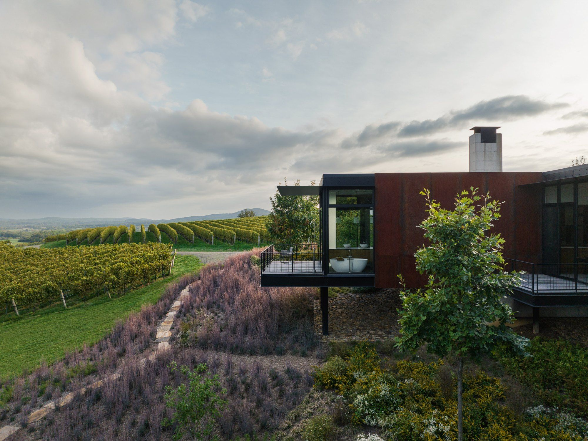
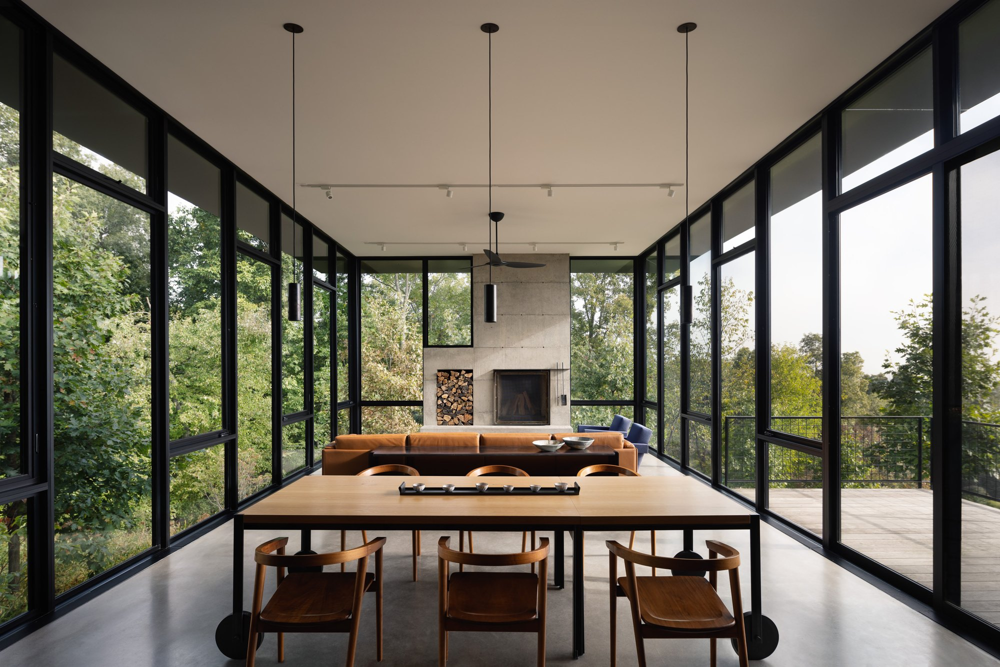
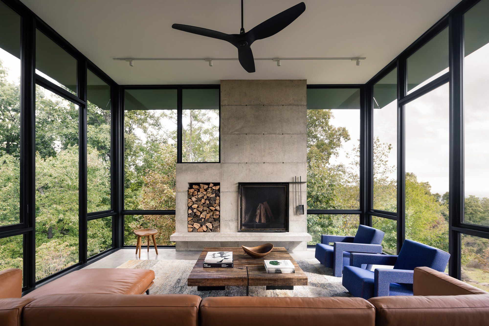

Blue Ridge House: building what can't be hidden

Olson Kundig designed Blue Ridge House to feel like living within the trees. Our job was to build the parts that make that possible — the concrete, the steel, the moving walls — and then leave them showing.
The house sits on a knoll above rolling vineyard country west of Washington. A board-formed concrete plinth anchors it to the crest of the hill and, at the same time, lifts it up into the canopy; from there the home reaches out over the slope on steel-reinforced cantilevers. You enter at the lower level, set into the hillside, where the clients keep their wine. Above, a cruciform plan opens around a central kitchen, with the living room, screen porch, primary suite, and a children's wing reaching out in each direction.
Every material is also the finish
What makes a house like this demanding isn't its size. It's that nothing is covered up. The board-formed concrete, the Corten steel left to weather, the blackened steel inside — each one is both the structure and the finished surface. There is no drywall to bury a rough edge, no trim to close a gap.
When the concrete and the steel are the finished surfaces, there is nowhere to hide a joint or make up a tolerance.
That changes how you build. Formwork for the concrete has to be treated like finish carpentry, because the grain of the boards is what you'll see for the life of the house. The Corten is installed knowing it will keep changing — left unfinished to weather in place to a deep, reddish patina. Every measurement is a final measurement.
The parts that move

Much of the house is kinetic — built to let the family change its scale. A twenty-foot kinetic steel door opens the great room straight into the screen porch, so the main living space becomes part of the landscape. A pivoting entry door turns on its own axis. A twelve-foot sliding barn door closes off the children's wing when the kids are away. A tube-steel screen door is detailed with a storm-door mortise. All of it was coordinated with Olson Kundig's construction-administration team, and all of it has to do something ordinary doors never have to: run smoothly, and seal, for decades.
Steel, by hand

A great deal of the home's character was made rather than ordered. Our team handled the Corten cladding, the firebox door, and the mantle; specialty fabricators made the handles, the wine-room panels, and the bed rails. In the cellar, a blackened, perforated steel panel floats off the wall — its open area sized together with the mechanical engineer so air keeps moving through the wine collection behind it.
Inside, blackened steel panels clad the kitchen, with lighting, furniture, and hardware from the Tom Kundig Collection. The custom dining table converts from a three-foot square to a three-by-nine-foot rectangle. Below the residence sit a pool and a guest house, where a mobile cabinet with integrated Murphy beds lets the space work as a yoga studio, an office, or a two-bedroom suite.
Finished as drawn
The house was built as designed — the concrete and steel left exposed, exactly as intended, as the finish. It has since been published by Dwell, Designboom, and The Local Project. See more of the project in our portfolio, or read how we approach this kind of work in architect-led construction.
A house that hides nothing asks more of the people building it — and shows more of them in the end. That's the kind of work we're built for.